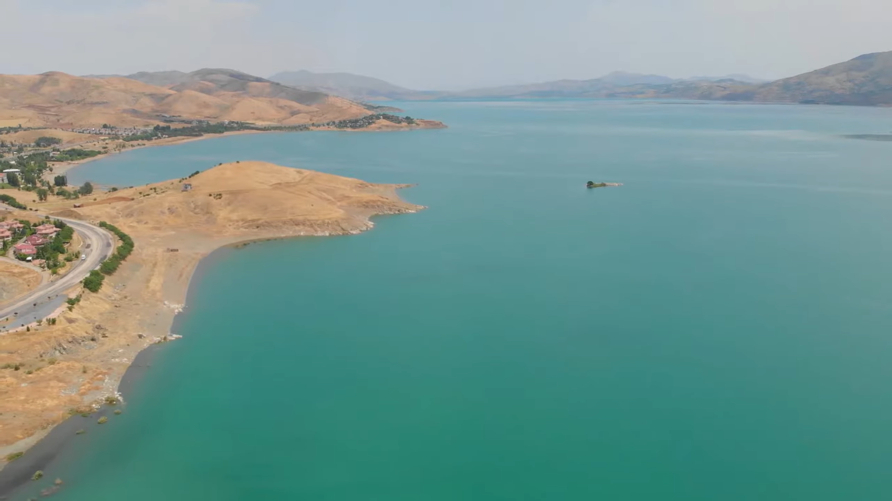

Harput Kalesi ve tarihi camileri ile Elazığ’ın en önemli turistik bölgesidir.

Doğal güzellikleri ile ünlü Hazar Gölü, dinlenmek ve kamp yapmak için ideal bir yerdir.
Yaz aylarında bile soğuk havası ile dikkat çeken doğal bir mağaradır.
Çırçır Şelalesi, Elazığ'ın doğal güzelliklerinden biri olup, şehrin gürültüsünden uzaklaşıp doğayla iç içe olmak isteyenler için mükemmel bir kaçış noktasıdır.